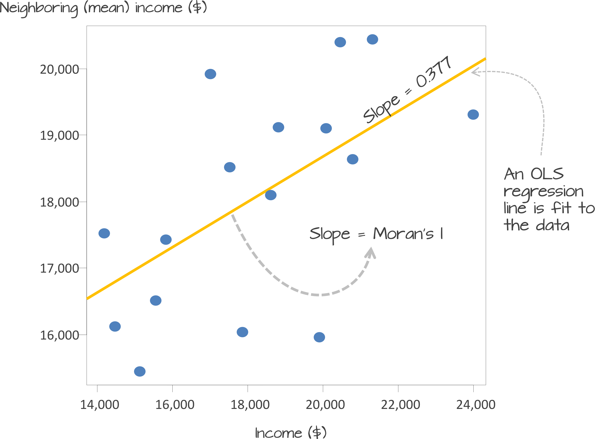
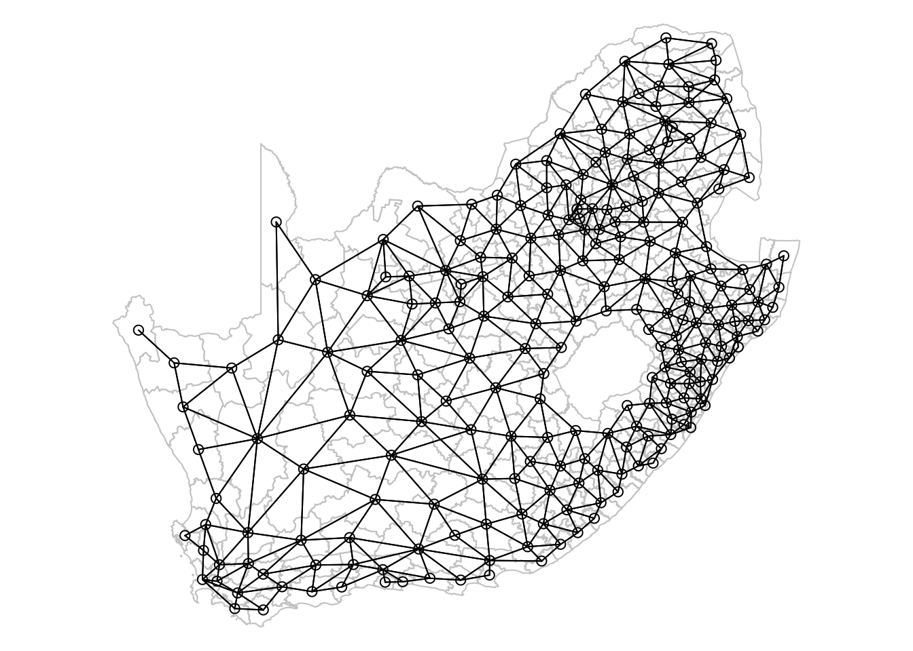
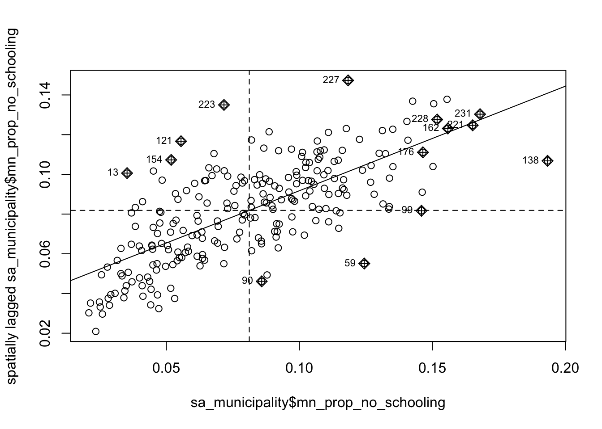
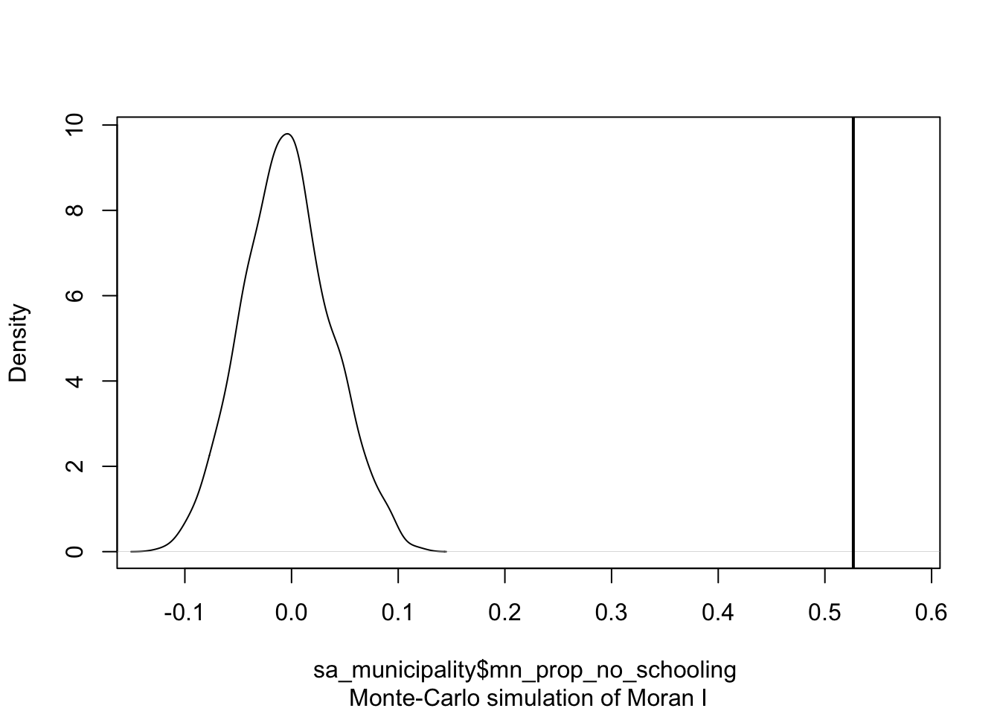
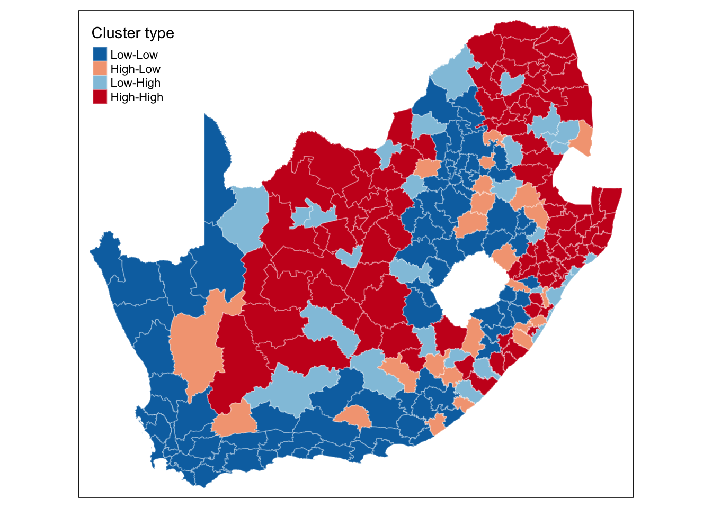
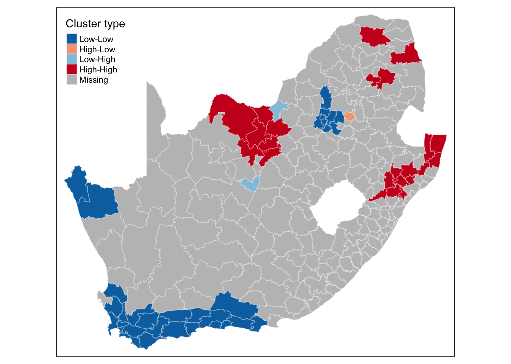

R code
# shape, polygons
tm_shape(sa_municipality) +
# specify column, classes
tm_polygons(
col = "mn_prop_no_schooling",
n = 5,
style = "jenks"
) +
# no legend
tm_layout(
legend.show = FALSE
)
Start your Geospatial-Workshop24 project and open a new script. Save this as 03-autocorrelation.r. We will start again by loading the libraries that we will need:
R code
# load libraries
library(tidyverse)
library(sf)
library(tmap)
library(spdep)In this session, we will be looking at education at the municipal level, focusing on the number of people with no schooling aggregated from the South African Census Community Profiles 2011. Along with this dataset, we also have access to a GeoPackage that contains the spatial boundaries of these municipalities. You can download both files below and save them in your project folder under data/attributes and data/spatial, respectively.
| File | Type | Link |
|---|---|---|
| SA Census 2011 No Schooling Variable | csv |
Download |
| SA Municipalities | GeoPackage |
Download |
To download the csv file containing the mn_no_school variable that is hosted on GitHub, click on the Download raw file button on the top right of your screen and it should download directly to your computer.
Once downloaded, we can load both files into memory:
R code
# load spatial data
sa_municipality <- st_read("data/spatial/municipality-south-africa-2013.gpkg")Reading layer `municipality-south-africa-2013' from data source
`/Users/justinvandijk/Library/CloudStorage/Dropbox/UCL/Web/jtvandijk.github.io/SA-TIED/data/spatial/municipality-south-africa-2013.gpkg'
using driver `GPKG'
Simple feature collection with 234 features and 19 fields
Geometry type: MULTIPOLYGON
Dimension: XY
Bounding box: xmin: 1831416 ymin: -4141363 xmax: 3667419 ymax: -2526543
Projected CRS: WGS 84 / Pseudo-Mercator# load attribute data
sa_no_schooling <- read_csv("data/attributes/sa-no-schooling.csv")Rows: 234 Columns: 4
── Column specification ────────────────────────────────────────────────────────
Delimiter: ","
chr (1): mn_name
dbl (3): mn_code, mn_pop, mn_no_school
ℹ Use `spec()` to retrieve the full column specification for this data.
ℹ Specify the column types or set `show_col_types = FALSE` to quiet this message.You can inspect both objects using the View() function.
With this dataset, we are interested in analysing the proportion of people without schooling across the country and visualising this information on a map. Let us start by preparing the data for mapping:
R code
# calculate proportions
sa_no_schooling <- sa_no_schooling |>
mutate(mn_prop_no_schooling = mn_no_school / mn_pop)
# join attribute data onto spatial data
sa_municipality <- sa_municipality |>
left_join(sa_no_schooling, by = c("mn_code" = "mn_code"))We can now create a simple map:
R code
# shape, polygons
tm_shape(sa_municipality) +
# specify column, classes
tm_polygons(
col = "mn_prop_no_schooling",
n = 5,
style = "jenks"
) +
# no legend
tm_layout(
legend.show = FALSE
)
Looking at the map, the geographical patterning of the percentage of the population that does not have any schooling appears to be neither random nor uniform, with a tendency for similar values to be found in closely located municipalities. Let us compare our map to a map with the same values which have been randomly permutated:
R code
# seed for reproducibility of random permutation
set.seed(99)
# random permutation
sa_municipality <- sa_municipality |>
mutate(mn_prop_no_schooling_random = sample(sa_municipality$mn_prop_no_schooling, replace = FALSE))
# shape, polygons
tm_shape(sa_municipality) +
# specify column, classes
tm_polygons(
col = "mn_prop_no_schooling_random",
n = 5,
style = "jenks"
) +
# no legend
tm_layout(
legend.show = FALSE
)
Looking at Figure 2, even with the values being randomly permuted, certain patterns seem to emerge. This observation raises an important question: to what extent are the patterns that we see in the actual data actually present? A widely used method to quantify the similarity between neighbouring locations is by calculating Moran’s I statistic. This measure assesses spatial autocorrelation, indicating the degree to which values of a variable cluster spatially — either through similar (positive spatial autocorrelation) or contrasting values (negative spatial autocorrelation).
Underlying our Moran’s I test is the concept of a spatial lag. A spatial lag refers to a concept in spatial analysis where the value of a variable at a given location is influenced by the values of the same variable at neighboring locations. Essentially, it captures the idea that observations in close proximity are likely to be correlated, meaning that what happens in one area can ‘lag’ into or affect nearby areas. The Moran’s I statistic tries to capture the relationship between a value and its spatial lag. An Ordinary Least Squares (OLS) regression is applied, after both variables have been transformed to z-scores, to fit the data and produce a slope, which determines the Moran’s I statistic.

Moran’s I values typically range from \(-1\) to \(1\):
There are two approaches to estimating the significance of the Moran’s I statistic: an analytical method and a computational method. The analytical method relies on assumptions about the data, such as normality, which can sometimes limit its reliability. In contrast, the computational method, which is preferred here, does not make such assumptions and offers a more flexible and robust evaluation of significance.
The computational approach is based on a repeated random permutation of the observed values. The Moran’s I statistic is then calculated for each of these randomly reshuffled data sets, generating a reference distribution. By comparing the observed Moran’s I value to this reference distribution, we can assess whether our observed statistic is typical or an outlier and calculate a psuedo \(p\)-value (see Figure 4). If the observed Moran’s I value is an outlier, meaning it falls outside the range expected from random data distribution, it suggests a significant degree of clustering in the data.

We can derive a pseudo-\(p\) value from these simulation results as follows:
\[ \frac{N_{extreme} + 1}{N + 1} \]
where \({N_{extreme}}\) is the number of simulated Moran’s I values that were more extreme than our observed statistic and \({N}\) is the total number of simulations. In the example shown in Figure 4, only 1 out the 199 simulations was more extreme than the observed local Moran’s I statistic. Therefore \({N_{extreme}}\) = 1 , so \(p\) is equal to \((1+1) / (199 + 1) = 0.01\). This means that there is a one percent probability that we would be wrong in rejecting the null hypothesis of spatial randomness.
If the purpose of a Moran’s I test is to quantify how similar places are to their neighbours, the first step is to define what constitutes a neighbour. This definition is not necessarily straightforward, because ‘neighbouring’ observations can be determined in various ways, based on either geometry or proximity. The most common methods include:
To capture this information, we need to formalise the spatial relationships within our data by constructing a spatial weights matrix (\(W_{ij}\)). This matrix defines which units are neighbours based on our chosen criteria.
In the following example, neighbours are defined as places that share a border (i.e., they are contiguous). Currently, it is sufficient for them to meet at a single point — so if two places are triangular, touching corners would count them as neighbours. If, however, you require them to share an edge, rather than just a corner, you can modify the default argument by setting queen = FALSE.
R code
# create neighbour list
sa_mn_nb <- poly2nb(sa_municipality, queen = TRUE)
# inspect
summary(sa_mn_nb)Neighbour list object:
Number of regions: 234
Number of nonzero links: 1244
Percentage nonzero weights: 2.271897
Average number of links: 5.316239
Link number distribution:
1 2 3 4 5 6 7 8 9 10
1 7 22 35 56 64 40 3 5 1
1 least connected region:
102 with 1 link
1 most connected region:
193 with 10 linksThe neighbour list object is a sparse matrix that lists the neighboring polygons for each municipality. This matrix represents the spatial relationships between municipalities, where each entry indicates which polygons share boundaries. These neighborhood relationships can be visualised as a graph by extracting the coordinate points of the centroids of the polygons representing each municipality:
Regardless of the neighborhood definition you choose, it is important to verify the results, particularly when using contiguity-based approaches. If your spatial file has issues such as polygons that appear adjacent but do not actually share a border, your results may be inaccurate. You could increase the default value of the snap distance parameter in the poly2nb() function to include these polygons only separated by small gaps.
R code
# extract centroids from polygons
sa_mn_cent <- st_centroid(sa_municipality, of_largest_polygon = TRUE)Warning: st_centroid assumes attributes are constant over geometries# plot graph
par(mai = c(0, 0, 0, 0))
plot(st_geometry(sa_municipality), border = "#cccccc")
plot(sa_mn_nb, st_geometry(sa_mn_cent), add = TRUE)
The neighbourhood list simply identifies which areas (polygons) are neighbours, but spatial weights take this a step further by assigning a weight to each neighbourhood connection. This is important because not all polygons have the same number of neighbours. To ensure that our spatially lagged values are comparable across neighbourhoods of different sizes, standardisation is required. The code below uses style = 'W' to row-standardise the values: if a municipality has five neighbours, the value of the spatially lagged variable will be the average of that variable across those five neighbours, with each neighbour receiving equal weight.
R code
# create spatial weights matrix
sa_mn_nb_weights <- sa_mn_nb |>
nb2listw(style = "W")
# inspect - neigbhours of polygon '10'
sa_mn_nb_weights$neighbours[[10]][1] 3 9 11 44 45 124 165# inspect - weights of neighbours of polygon '10'
sa_mn_nb_weights$weights[[10]][1] 0.1428571 0.1428571 0.1428571 0.1428571 0.1428571 0.1428571 0.1428571Not all places have neighbours. Islands, by definition, will not be considered as neighbours using a contiguity approach. If you attempt to create spatial weights using the nb2listw() function with a neighbourhood list that includes places without neighbours, you will encounter an error message. Potential solutions include using a different neighbourhood definition (e.g. \(k\)-nearest neighbours) or manually editing the neighbourhood file if you wish to include these polygons. Alternatively, you can leave it as is but then you must specify the argument zero.policy = TRUE in nb2listw() to allow for empty sets.
Now that everything is in place, we can begin by plotting the proportion of people without schooling against the spatially lagged values:
R code
# moran's plot
moran.plot(sa_municipality$mn_prop_no_schooling, listw = sa_mn_nb_weights)
We observe a positive relationship between our mn_prop_no_schooling variable and the spatially lagged values, suggesting that our global Moran’s I test will likely yield a statistic reflective of the slope visible in the scatter plot.
R code
# moran's test
moran <- moran.mc(sa_municipality$mn_prop_no_schooling, listw = sa_mn_nb_weights,
nsim = 999)
# results
moran
Monte-Carlo simulation of Moran I
data: sa_municipality$mn_prop_no_schooling
weights: sa_mn_nb_weights
number of simulations + 1: 1000
statistic = 0.52666, observed rank = 1000, p-value = 0.001
alternative hypothesis: greaterThe results of the Monte Carlo simulation, visualised in Figure 7, suggest that there is statistically significant positive autocorrelation in our variable. This indicates that municipalities with higher percentages of people without schooling tend to be surrounded by other municipalities with similarly high percentages. Likewise, municipalities with lower percentages of people without schooling are generally surrounded by municipalities with similarly low values.
R code
# permutation distribution
plot(moran, main = "")
Although we have established that there is positive spatial autocorrelation in our data, we still need to identify the specific spatial patterns. Looking back at Figure 3, you will notice that the plot is divided into four quadrants.
We can show these area on a map by deconstructing the Moran’s I into a series of local Moran values, each measuring how similar each place is (individually) to its neighbours.
R code
# local moran's test
lmoran <- localmoran_perm(sa_municipality$mn_prop_no_schooling, listw = sa_mn_nb_weights,
nsim = 999)
# results
head(lmoran) Ii E.Ii Var.Ii Z.Ii Pr(z != E(Ii))
1 -0.050379105 -5.007116e-04 0.0055169108 -0.6715285 0.5018839
2 0.076088895 8.806626e-03 0.0358989035 0.3551077 0.7225089
3 0.294045408 -6.371539e-04 0.1058262803 0.9058529 0.3650137
4 0.452492637 4.444755e-03 0.4386494317 0.6764966 0.4987254
5 0.111902772 -1.280624e-03 0.0195226887 0.8100520 0.4179103
6 0.002486432 9.338536e-05 0.0005451827 0.1024897 0.9183680
Pr(z != E(Ii)) Sim Pr(folded) Sim Skewness Kurtosis
1 0.506 0.253 -0.1147855 -0.23093560
2 0.714 0.357 0.1969864 0.03091263
3 0.356 0.178 0.2355106 0.06633588
4 0.502 0.251 0.1855721 -0.35342466
5 0.438 0.219 0.1767742 -0.31332065
6 0.948 0.474 -0.1729386 -0.13325485We are not given a single statistic as we did with our global Moran’s I, but rather we get a table of different statistics that are all related back to each of the municipalities in our dataset. If we refer to the help page for the localmoran() function, we can find detailed explanations of these statistics. The most relevant ones include:
| Name | Description |
|---|---|
Ii |
Local Moran’s I statistic. |
E.Ii |
Expectation (mean) of the local Moran’s I statistic. |
Var.Ii |
Variance of local Moran’s I statistic |
Z.Ii |
Standard deviation (z-score) of the local Moran’s I statistic. |
Pr() |
Pseudo \(p\)-value of local Moran’s I statistic based on standard deviations and means from the permutation sample. |
Pr() Sim |
Pseudo \(p\)-value of local Moran’s I statistic based on the rank within the permutation sample, assuming a uniform distribution. |
Pr(Folded) Sim |
Pseudo \(p\)-value of local Moran’s I statistic based on the rank within the permutation sample using a one-sided test, assuming a uniform distribution. |
We can further extract the quadrants to which of all these polygons have been assigned:
R code
# extract quadrants
lmoran_quadrants <- attr(lmoran, "quadr")
# inspect
head(lmoran_quadrants) mean median pysal
1 Low-High Low-High Low-High
2 High-High High-High High-High
3 High-High High-High High-High
4 High-High High-High High-High
5 High-High High-High High-High
6 Low-Low Low-Low Low-LowWe can now link these values back to our spatial dataframe and make a map using the tmap library:
R code
# replace names
names(lmoran_quadrants) <- c("lmoran_mean", "lmoran_median", "lmoran_pysal")
# bind results
sa_municipality <- sa_municipality |>
cbind(lmoran_quadrants)
# shape, polygons
tm_shape(sa_municipality) +
# specify column, colours
tm_polygons(
col = "lmoran_mean",
border.col = "#ffffff",
border.alpha = 0.3,
palette = c(
"Low-Low" = "#0571b0",
"Low-High" = "#92c5de",
"High-Low" = "#f4a582",
"High-High" = "#ca0020"
),
title = "Cluster type",
) +
# set layout
tm_layout(
legend.outside = FALSE,
legend.position = c("left", "top"),
)
This type of map is called a LISA map and is a great way of showing how a variable is actually clustering over space. However, we can improve on this further by only mapping the statistically significant clusters:
R code
# replace values if not significant
lmoran_quadrants[lmoran[, 6] > 0.05, ] <- NA
# replace names
names(lmoran_quadrants) <- c("lmoran_mean_sig", "lmoran_median_sig", "lmoran_pysal_sig")
# bind results
sa_municipality <- sa_municipality |>
cbind(lmoran_quadrants)
# shape, polygons
tm_shape(sa_municipality) +
# specify column, colours
tm_polygons(
col = "lmoran_mean_sig",
border.col = "#ffffff",
border.alpha = 0.3,
palette = c(
"Low-Low" = "#0571b0",
"Low-High" = "#92c5de",
"High-Low" = "#f4a582",
"High-High" = "#ca0020"
),
title = "Cluster type",
) +
# set layout
tm_layout(
legend.outside = FALSE,
legend.position = c("left", "top"),
)
This new map may still not fully address the issue of statistical significance due to repeated testing, and some values may appear significant purely by chance. To correct for this, you can adjust the \(p\)-values using R’s p.adjust() function. For further details, refer to Manual Gimond’s explanation of the multiple comparison problem in the context of the pseudo-\(p\) values.
This concludes this session. Any statistic that includes spatial weights is dependent upon how those weights are defined. We have so far used first order contiguity, i.e. polygons that share a boundary, but there is no particular reason why we should not include second order contiguity polygons (i.e. neighbours of neighbours), use a fixed distance neighbours definitions, or adopt a \(k\) nearest neighbours definition.
Please try to complete the following tasks:
sa_municipality file.5 nearest neighbours for each municipalities, using the knearneigh() function.knn2nb() function.mn_prop_no_schooling variable using this new neighbourhood definition.